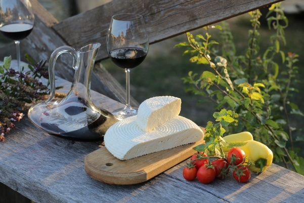

Gastronomic Festival,
Krasnodar Territory
Krasnodar Region presented its gastronomic brands in the framework of the expedition "South" of the federal project "Gastronomic Map of Russia".
The participants of the expedition visited the festival of traditional cuisine of the Kuban peoples "At the common table" in the ethnographic complex "Ataman". Guests were presented with a table-installation of traditional Kuban dishes. Azov pikeperch, young Taman pelengas, farm duck, beef, rice and, of course, the famous dairy Kuban products, tomatoes and wine have become a table decoration and raw materials for the culinary master classes held here from chefs and tasting sets of regional cuisine. Brand-chef of the project in Krasnodar region was the winner of the Russian qualifying round of the main contest of masters of high cuisine Bocuse d'Or Andrey Matyukha.
The participants of the expedition visited the festival of traditional cuisine of the Kuban peoples "At the common table" in the ethnographic complex "Ataman". Guests were presented with a table-installation of traditional Kuban dishes. Azov pikeperch, young Taman pelengas, farm duck, beef, rice and, of course, the famous dairy Kuban products, tomatoes and wine have become a table decoration and raw materials for the culinary master classes held here from chefs and tasting sets of regional cuisine. Brand-chef of the project in Krasnodar region was the winner of the Russian qualifying round of the main contest of masters of high cuisine Bocuse d'Or Andrey Matyukha.
